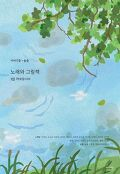
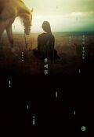
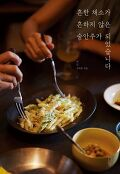
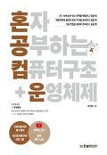
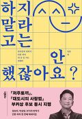
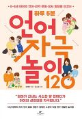
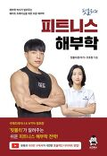
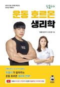
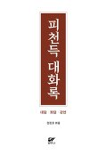

소장자료 검색
홈 > 자료검색 > 소장자료검색
신착자료
[울산도서관] 노래와 그림책

저자 - 이야기꽃 편집부, 솔솔[공] 지음
발행처 - 이야기꽃
발행년 - 2023
청구기호 - 673.3-이63ㄴ-I
등록번호 - EC0000006343
대출여부 - 대출가능
대출예약 - 예약불가
무인대출 - 대출가능
무료택배 - 대출가능
자료위치 - 3층 종합자료실(일반자료)
그 그림책과 그 노래가 만나면 어떨까요? 그림책은 노래를 얻고, 노래는 그림책을 얻어 더 풍성한 아름다움을 빚어낼 수 있겠지요.
이야기꽃의 그림책 13작품을 노래로 만들었습니다. 전통성악 ‘정가’를 전공한 동요 듀오 솔솔이 맑은 소리로 불렀습니다.
그 노래들을 음질 좋은 CD에 싣고, 악보와 함께 담았습니다. 그림책을 읽으며 노래를 감상해 보세요.
[울산도서관] 후예들 : 심아진 장편소설

저자 - 심아진 지음
발행처 - 솔출판사
발행년 - 2023
청구기호 - 813.7-심62ㅎ
등록번호 - EM0000262558
대출여부 - 대출불가
대출예약 - 예약불가
무인대출 - 대출불가
무료택배 - 대출불가
자료위치 - 3층 종합자료실(일반자료)
홀로인 것을 마치 자신의 피부인 듯 영혼 깊숙이 받아들이며 당당하게 제 생을 일궈나갔던 후예들.
그들이 “아름답게 홀로” 또는 그렇게 살아내려 부단히 삶과 부딪히는 이야기를 그리는 소설은,
얼핏 보기에 세 여성 인물들의 관계와 내면을 메타 작가의 개입으로 흥미롭게 묘파하는 추리소설로 보일 수 있을 것
[울산도서관] 흔한 채소가 흔하지 않은 술안주가 되었습니다

저자 - 허인,김희종 지음 ; 김정인 사진
발행처 - 맛있는 책방
발행년 - 2023
청구기호 - 594.5-허68ㅎ
등록번호 - EM0000262557
대출여부 - 대출가능
대출예약 - 예약불가
무인대출 - 대출가능
무료택배 - 대출가능
자료위치 - 3층 종합자료실(일반자료)
늘 누군가를 위해 음식을 만드는 이들이지만, 자신을 위해 차리는 술상에는 큰 수고로움을 들이지 않는 요리가 많습니다.
격식을 차리지 않아 더 쉽고 편안하고 가벼운 술안주를 만들 수 있습니다.
[울산도서관]혼자 공부하는 컴퓨터구조 + 운영체제

저자 - 강민철 지음
발행처 - 한빛미디어
발행년 - 2022
청구기호 - 004.22-강38ㅎ
등록번호 - EM0000262556
대출여부 - 대출가능
대출예약 - 예약불가
무인대출 - 대출가능
무료택배 - 대출가능
자료위치 - 3층 종합자료실(일반자료)
뭘 모르는지조차 모르는 입문자의 막연한 마음에 십분 공감하여 과외 선생님이 알려주듯 친절하게, 핵심 내용만 콕콕 집어 준다.
〈컴푸터 구조〉편에서는 컴퓨터를 이루고 있는 부품들과 각 부품의 역할을 알아본다. 또한 컴퓨터 내부의 구조와 작동법을 이해하고, 컴퓨터가 어떻게 명령어를 처리하는지 학습한다.
[울산도서관]하지 말라고는 안 했잖아요? : 한국문학 번역가 안톤 허의 내 갈 길 가는 에세이

저자 - 안톤 허 지음
발행처 - 어크로스
발행년 - 2023
청구기호 - 818-허,6ㅎ
등록번호 - EM0000262555
대출여부 - 대출불가
대출예약 - 예약불가
무인대출 - 대출불가
무료택배 - 대출불가
자료위치 - 3층 종합자료실(일반자료)
놀랍게도 이 두 작품은 모두 한 사람에 의해 번역되었다. 바로 한국문학 번역가 안톤 허.
이로써 안톤 허는 부커상 역사상 한 해에 두 권의 책을 올린 세 번째 번역가이자 유색인종으로서는 첫 번째 번역가가 되었다.
[울산도서관](0~6세 아이의 언어·감각·운동·정서 발달을 이끄는) 하루 5분 언어 자극 놀이 120

저자 - 장재진 지음 ; 임소희 그림
발행처 - 카시오페아
발행년 - 2023
청구기호 - 004.22-강38ㅎ
등록번호 - EM0000262556
대출여부 - 대출불가
대출예약 - 예약가능반납예정일 : 2023/11/30
무인대출 - 대출불가
무료택배 - 대출불가
자료위치 - 3층 종합자료실(일반자료)
그러므로 아이의 언어 발달을 위해서는 이 시기에 반드시 부모로부터 적절한 자극이 주어져야 하며, 이때 ‘자극’은 ‘놀이’의 모습일 때 가장 큰 효과를 불러일으킨다.
0~6세 아이에게 놀이란 삶 그 자체로, 아이는 놀이를 통해 배우고 성장해서다.
[울산도서관](핏블리의) 피트니스 해부학 : 해부학 박사가 알려주는 웨이트 트레이닝을 위한 쉬운 해부학

저자 - 핏블리,조호정 지음
발행처 - 쇼크북스
발행년 - 2022
청구기호 - 593.5-핏47ㅍ
등록번호 - EM0000262553
대출여부 - 대출불가
대출예약 - 예약불가
무인대출 - 대출불가
무료택배 - 대출불가
자료위치 - 3층 종합자료실(일반자료)
1. 기본적인 운동 해부학적 지식을 최근에 게재된 논문 근거로 풀어내 이해도와 적용도를 높인 운동 이론서 특징
2. 어려운 해부학적 기전에 대한 이해도를 높이고 해부학을 쉽게 접할 수 있도록 저자가 직접 그린 독자 친화적 일러스트 특징
3. 각 장의 필요한 포인트만 기억하고 운동에 적용할 수 있도록 챕터별 요점정리 수록
[울산도서관](핏블리의) 운동 호르몬 생리학 : 보이지 않는 강력한 메신저, 호르몬 이해하기

저자 - 핏블리,문나람 [공]지음
발행처 - 쇼크북스
발행년 - 2022
청구기호 - 593.5-핏47ㅇ
등록번호 - EM0000262552
대출여부 - 대출불가
대출예약 - 예약가능반납예정일 : 2023/11/23
무인대출 - 대출불가
무료택배 - 대출불가
자료위치 - 3층 종합자료실(일반자료)
수많은 사람들이 몸을 만들기 위해, 다이어트를 하기 위해 운동‘만’ 열심히 한다.
그가 강조하는건 “운동만 열심히 하면 몸이 고생한다” 근육증가든 다이어트든 인체에서 일어나는 생리학 기전을 이해하고 운동하는게 중요하다고 그는 강조한다.
[울산도서관](핏블리의) 기초 운동지식 전략집
저자 - 핏블리 지음
발행처 - 쇼크북스
발행년 - 2022
청구기호 - 593.5-핏47ㄱ
등록번호 - EM0000262551
대출여부 - 대출불가
대출예약 - 예약가능반납예정일 : 2023/11/23
무인대출 - 대출불가
무료택배 - 대출불가
자료위치 - 3층 종합자료실(일반자료)
“운동은 열심히 하는 게 아니라 효율적으로 해야 합니다” 저자 핏블리는 유튜브 113만 구독자가 믿고 보는 국제 트레이너 겸 스포츠 영양 코치다.
많은 사람들은 운동을 더 오래, 더 많이, 더 무겁게 하면 된다고 생각하거나 영양섭취를 더 적게, 단백질만, 저탄수화물 등 너무 열심히 하는 경우를 흔히 볼 수 있다.
핏블리는 이와 같은 방법을 비효율적인 방법이라고 말한다.
[울산도서관] 피천득 대화록 : 대담·좌담·강연

저자 - 정정호 엮음
발행처 - 범우사
발행년 - 2022
청구기호 - 815-정74ㅍ
등록번호 - EM0000262550
대출여부 - 대출가능
대출예약 - 예약불가
무인대출 - 대출가능
무료택배 - 대출가능
자료위치 - 3층 종합자료실(일반자료)
그러나 이것은 우리가 금아의 삶과 문학의 겉모습에 속아 넘어가는 것이다.
피천득의 대화록은 그가 쓴 시, 수필, 산문, 번역에서 제외되었던 강연, 대담과 좌담회에서 언명된 것으로 그의 삶과 문학을 이해하는 데 중요한 자료들이다.
담당부서 : 정보서비스과
담당자 : 장원익
연락처 : 052-299-6985